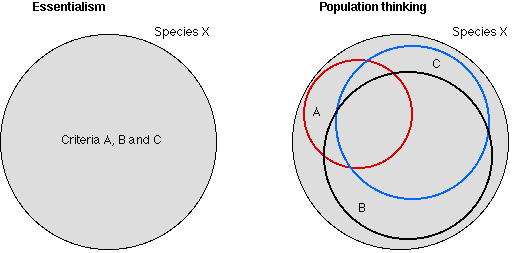

Resumen: Las especies no son tipos eternos, aunque son categorías naturales.
Antes de Lamarck, se pensaba que las especies eran tipos eternos, y que cualquier organismo individual poseía todas las condiciones necesarias y suficientes para ser miembro de esa especie. Piénsalo de esta manera: para ser miembro de los seguidores de un equipo de fútbol, debes tener ciertas características. Por el bien del argumento, supongamos que son las siguientes:
- miembro de pago del club de fans,
- un interés personal que se acerca a la obsesión por la suerte de tu equipo, y
- propiedad de ciertos artículos de identidad del equipo (gorras, banderas o libros).
Cualquiera que tenga uno, o incluso dos, de estos criterios cumplidos aún no puede ser un partidario. Podría obtener su membresía de un acuerdo de patrocinio corporativo en el que no tenga interés. Podría estar obsesivamente fijado debido a un trastorno psicológico. Podría coleccionar cosas con la esperanza de que se vuelvan valiosas. Cada condición es necesaria, pero solo todas las condiciones son suficientes para que usted califique. Se pensaba que un organismo necesitaba caracteres identificadores -todos ellos- para ser miembro de la especie. Y estas condiciones nunca cambiaron. 'Partidario de fútbol' era una idea que permanecería igual aunque nadie cumpliera las condiciones, o incluso jugara fútbol. Si algo era una especie, no podía cambiar, y si cambiaba, no podía ser una especie.[nota 5]
 |
Este es el tipo de opinión expresada implícitamente cuando un creacionista afirma que tal cambio representa una "de-evolución": un movimiento alejado del "tipo puro". El gran teórico de la evolución Ernst Mayr, siguiendo al filósofo Karl Popper, ha denominado a esto "esencialismo tipológico", la opinión de que las especies tienen esencias de alguna manera aristotélica [Mayr 1988]. Mientras que los "géneros" mencionados en la Biblia ( Génesis 1:21-23) son meramente observaciones de que la descendencia se parece a los padres, es decir, que algún principio de herencia está activo en la reproducción, Aristóteles sostenía más bien que los seres vivos se generan como una aproximación a una "forma" de esa especie. Hay algo que representa al perro perfecto, por ejemplo. [nota 6] Esta visión encontró su camino en la teología cristiana a través de la redescubrimiento de Aristóteles desde la tradición islámica en la Edad Media, principalmente a través de Tomás de Aquino, y fue consagrada en la biología por Carl von Linneo en el siglo XVIII en lo que ahora se llama el sistema de clasificación lineano.
Después del trabajo de los exploradores y naturalistas del siglo XIX, los científicos ya no podían ver las especies de esta manera. Eran mucho más diversas que eso. No solo las especies a veces eran más diferentes entre sí internamente que algunos miembros lo eran con otras especies, sino que se hizo evidente que lo que realmente era común entre los miembros de una especie era la capacidad de cruzarse (al menos, en especies sexuales).
De hecho, esta visión (ahora llamada concepto biológico de especie ) precedió a la evolución en unos cincuenta años, derivando de Buffon, quien atacó el sistema de Linneo. Significaba que considerar las especies como morfología (es decir, como grupos de caracteres de organismos) ya no era científicamente posible. Algunos, incluido Darwin, pensaron en ocasiones que esto significaba que las especies eran nombres convencionales dados para registrar observaciones, pero nada más, y que las 'especies' eran construcciones artificiales. Otros se aferraron a la visión más antigua de que había algo en virtud del cual las cosas eran miembros de una especie, pero que esto no tenía nada que ver con su morfología, sino con sus relaciones de descendencia. Por supuesto, si todo lo que hace que un organismo sea miembro de una especie es la variación que se observa y esta es real, entonces no hay nada en ser una especie que pueda impedir que una especie -o al menos una parte de una especie- se convierta en algo diferente y nuevo. Nada más tiene sentido científico.
En este siglo, el sistemático Ernst Mayr (por ejemplo, [1970]) ha defendido la postura de que lo que él llama 'pensamiento tipológico' ha sido abandonado por los biólogos modernos en favor de lo que él denomina 'pensamiento poblacional'. La tipología es la visión de que existen 'tipos' - formas inmutables que son lo que hace que una especie sea lo que es. Se deriva de la filosofía de Platón, quien afirmó que el verdadero conocimiento es el conocimiento de la Idea (griego eidos ). El pensamiento poblacional es un desarrollo reciente en el pensamiento occidental; es la visión de que los agregados de individuos, grupos, tienen un perfil que muestra una distribución de características. La conocida 'curva de campana' de la estadística ilustra esto: para casi cualquier rasgo de una población, encontrarás una distribución en forma de curva de campana. Algunos organismos serán más largos o más cortos, más pesados o más ligeros, y habrá una media alrededor de la cual se agruparán la mayoría de los individuos. La variación es un hecho universal sobre todas las especies. Algunas partes se encuentran en diferentes entornos, y la selección natural, la deriva genética y el azar trabajan para hacerlas diferentes si están aisladas lo suficiente. Así se crean nuevas especies.
Ingrese Michael Ghiselin [1975] y David Hull [1976, 1988]: un biólogo y un filósofo, respectivamente. Propusieron que las especies son no tipos universales, o clases, sino individuos históricos (que es lo que 'especies' significaba para Aristóteles de todos modos). El nombre de una especie, según Ghiselin y Hull, es un nombre propio, el nombre de un solo y único individuo que tiene un comienzo, una historia y una extinción, y que también tiene una distribución en el espacio. Homo sapiens no es, bajo esta visión, el nombre de un 'tipo' de animal racional como lo tenía Aristóteles, sino el nombre de una linaje particular de homínidos que tuvo el desarrollo del lenguaje y la razón. Si todos los humanos fueran extinguidos el próximo año, nunca podrían surgir de nuevo. Esta visión también es debatida fervientemente por filósofos y biólogos (cf Gayon [1996]). Mayr [1970] por ejemplo piensa que algunos taxones (por ejemplo, familias o incluso órdenes) son 'grados' que pueden alcanzarse más de una vez, lo que la tesis de la individualidad descarta.
Esto está relacionado con el complejo y difícil ámbito de los métodos taxonómicos colectivamente llamados cladística (del griego klados, que significa rama). La cladística intenta 'reconstruir el pasado' [Sober 1988] - recrear la filogenia - utilizando el menor número posible de supuestos teóricos, basándose en las distribuciones actuales de los rasgos de los organismos [Panchen 1992]. Esto merece un ensayo por sí mismo, pero no por mí.
Independientemente de la visión triunfante en filosofía, las nociones evolutivas de especies excluyen los tipos eternos, a favor de lo que los filósofos Hilary Putnam [1975] y Saul Kripke [1972], siguiendo al gran filósofo estadounidense WVO Quine [1969], llaman 'especies naturales' - cosas que existen naturalmente en ciertos tiempos y lugares. Como el ejemplo de Hobbes de la nave de Teseo, que a lo largo de un viaje fue completamente reconstruida, las especies pueden cambiar tanto que ya no son los mismos individuos que una vez fueron, pero este cambio puede ocurrir imperceptiblemente (a tasas variables), como Darwin esperaba que ocurriera. Las especies son entidades biológicas que cambian.